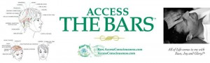

"Aki kifelé tekint, álmodik;
aki befelé, az ébred."
Tökéletes összhang
Hajlandó vagy megváltoztatni az életed?
Pénzt akarsz? Egészséget akarsz? Párt akarsz?
Egyszerűen jól szeretnéd érezni magad a bőrödben?
Az Access Bars®, ez az egyedülálló energetikai kommunikáció ezt teszi lehetővé!
Számodra legmegfelelőbb módon állítja helyre az életed minden területét, ha akarod!
Az Access Bars® a fejen található 32 pont finom érintéssel történő energetizálása,
mely egyben nyugtató és feszültségoldó hatású is.
Az Access Bars® pontok tartalmazzák az összes gondolatot, elképzelést, hiedelmet,
érzelmet és elgondolást, amit az eddigi élete(i)d során elraktároztál. Ez a tápláló és ellazító kezelés feloldja
a korlátokat, az ellentmondást és a diszharmóniát az élet összes területén.
Access Consciousness Bars®-al elengedhetők és gyógyíthatók a testi, lelki problémák,
a beavatott perui Munay-Ki és képesített Usui Reiki gyógyító által.
-
Access Bars: átfogó stresszoldás, energia áramlás helyreállítása testben és lélekben
Külön testkezelések:
-
MTVSS: immunrendszer erősítése, csontvelővel kapcsolatos kezelésre, ízületek kezelésére,
bármilyen betegségeknél, sejtszintű betegségek esetén, hogy a molekuláid mosolyogjanak
-
Biomimetikus mimikri: családi minták feloldása, anyai ág, apai ág, nagyszülők, családtagok,
mentorok, barátok, ellenségek mintáinak feloldása mindenhol, ahol a mások életét éled és nem a sajátodét
-
Sejtmemória: traumák, balesetek esetén, műtétek után, hegszövet, hegesedés, bőrproblémák
helyreállítására, sejtfiatalításra
-
MDDM: egy olyan energia, ami csontelváltozásokra, kinövésekre, szemölcsökre, tumorokra, test
átváltoztatására, fogyásra, a szervezetbe beépülő toxikus anyagok megszüntetésére alkalmas
Éva Lilla Hegedűsné Szakács
Access Bars kezelő
MTVSS, Mimikri, Sejtmemória,
MDDM testkezelő
06-20/916-7797
info@tokeletesosszhang.hu
Kapcsolat
„Az egész élet könnyedén, örömmel és ragyogva árad felém!“
